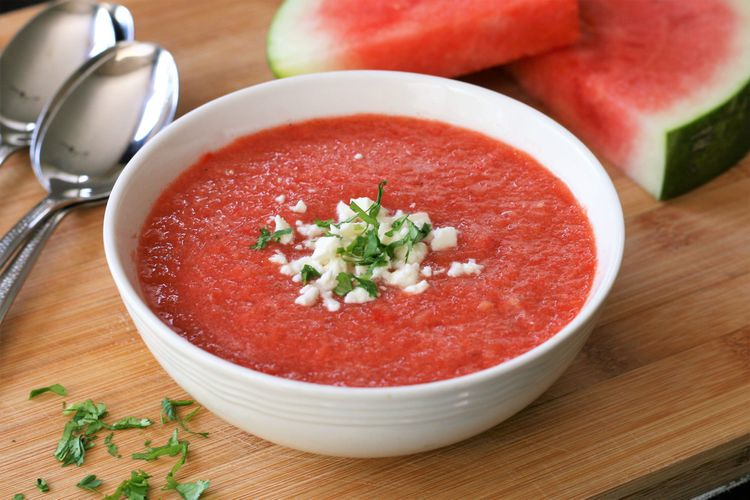

Pub-Style Vegetarian Chili

A spicy but flavorful chili recipe. Trust me, you won't miss the meat! We love to pair this with one of our favorite
microbrews.
- ⅓ cup olive oil
- 2 cups sliced fresh mushrooms
- 1 cup finely chopped onion
- 1 cup chopped carrot
- ¾ cup chopped green bell pepper
- ¼ cup chopped celery
- 1 tablespoon minced garlic
- 1 tablespoon chili powder, or more to taste
- 1 tablespoon ground cumin
- 1 ⅛ teaspoons salt
- ¾ teaspoon ground black pepper
- ¾ teaspoon dried basil
- ¾ teaspoon dried oregano
- 1 (28 ounce) can whole peeled tomatoes with juice
- 3 cups black beans, undrained
- ½ (6 ounce) can tomato paste
- ¼ cup red wine
- ¾ teaspoon hot pepper sauce (such as Tabasco®)
- 2 cups water
- Heat olive oil in a large pot over medium heat; cook and stir mushrooms, onion, carrot, green bell pepper,
celery, garlic, chili powder, cumin, salt, black pepper, basil, and oregano until the onion begins to soften, 2
to 3 minutes.
- Stir in tomatoes with their liquid, black beans and their liquid, tomato paste, red wine, hot pepper sauce, and
water.
- Bring the chili to a boil, reduce heat to low, and simmer until vegetables are tender, about 20 minutes.